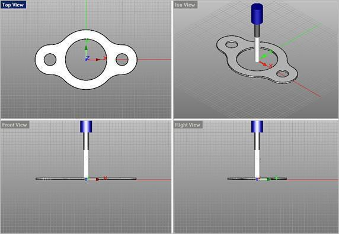

Available in: |
Xpress |
Standard |
Expert |
Professional |
Premium |
The MILL module allows creation of special purpose tools like form tools. These can be defined under user defined tool in the create/select tool dialog.
|
Steps to create a user defined tool: 1.Draw half the tool profile from the top view (XY plane of the world coordinate system) as shown in the picture above. 2.Make sure one end of the curve (tool tip) is at origin (0,0) and the other end at X0, Y<value>. 3.From the Tools tab under the Machining Objects Browser, click Create/Select Tool and select User Defined Tool.
4.Click Load selected tool profile curve.
5.Specify the Holder Diameter, Holder Length, Properties, Feed & Speeds and Click Save as New Tool. |
Preview Tool allows you to preview the highlighted tool in the workspace as seen below. The tool is previewed at the WCS origin.  Preview your Tool |